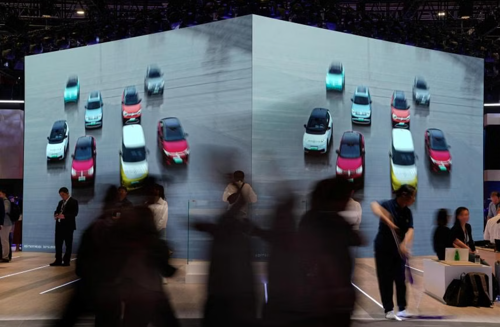

What should we consider when purchasing a new energy vehicle? Performance indicators for pure electric vehicles primarily include vehicle endurance, charging convenience, maintenance cost, battery energy density, vehicle power, safety, and other factors.
Endurance is crucial, as it determines how far the vehicle can travel on a single charge. Current market options typically offer ranges of 300 to 500 kilometers, which still differ from traditional fuel vehicles. Choosing a pure electric car with a longer range is advisable. Battery pack energy (kWh) can be roughly compared to fuel tank capacity, while power consumption per 100 kilometers (kWh/100 kilometers) can be likened to fuel consumption per 100 kilometers (liters/100 kilometers). Opting for a larger battery pack and lower power consumption per 100 kilometers ensures a longer range.
Some manufacturers may not directly disclose battery pack energy and power consumption per 100 kilometers, instead providing an exaggerated range of 60 kilometers.
Consider the vehicle's charging speed and whether it supports fast charging. Fast charging within an hour is efficient for new energy vehicles, compared to the quick refueling of traditional fuel vehicles. Manufacturers typically provide two charging speed specifications: fast charging time (0% to 80%) and slow charging time. Shorter fast charging times indicate faster charging speeds, with most manufacturers achieving times of less than half an hour.

Focus on the cost of vehicle maintenance, particularly the warranty period and mileage for the power system. Longer warranties, such as 8-year/150,000-kilometer warranties for power battery packs, motors, and electronic controls, provide peace of mind.
Energy density of the battery is crucial for ensuring a sufficient range. Energy density refers to the amount of electricity stored per unit volume or mass. Higher energy density results in lighter and more convenient vehicles, aiding handling and endurance mileage. Most cars currently have energy densities between 100 and 130 watt-hours/kg, with some achieving 140 watt-hours/kg or higher.
Consider the vehicle's power, including motor power and torque, as these directly impact performance. Permanent magnet synchronous motors are widely used for their high efficiency, fuller energy utilization, and increased range. Maximum speed and acceleration performance (0 to 50 km/h, 50 to 80 km/h, 0 to 100 km/h) are often used to compare dynamic performance.
About Semco - Established in 2006, Semco Infratech has secured itself as the number 1 lithium-ion battery assembling and testing solutions provider in the country. Settled in New Delhi, Semco provides turnkey solutions for lithium-ion battery assembling and precision testing with an emphasis on Research and Development to foster imaginative, future-proof products for end users.